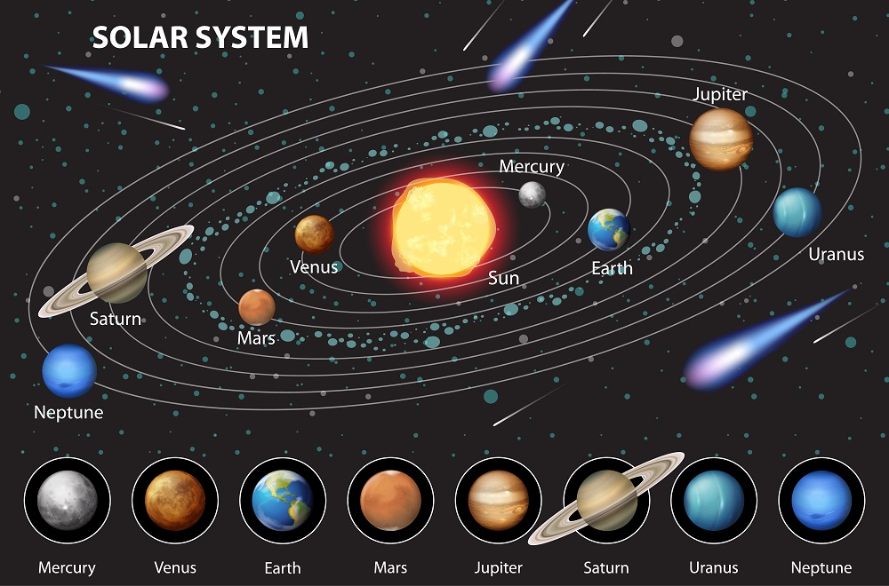

Image by brgfx on Freepik
Learn About Space
Learn the basics about our Solar System
Planet Earth
Earth is the third terrestrial planet from the sun, and our lovely home. To our knowledge, it is the only planet in the whole entire universe to have life on it! At approximately 147,905,750 KM (91,904,300 Miles) from the sun, it takes light 8.2 minutes to reach our home from our star, and it takes 365.25 Earth days to orbit the sun. Earth has a radius of 6,371 Kilometers (3,959 Miles), a volume of 1,000 billion cubic kilometers, and a mass of 5.97219 × 10²⁴ kilograms. The name "Earth" is a variation of "the ground" in many languages. It is the first planet in our solar system (in order from closest to farthest from the sun) to have a moon!